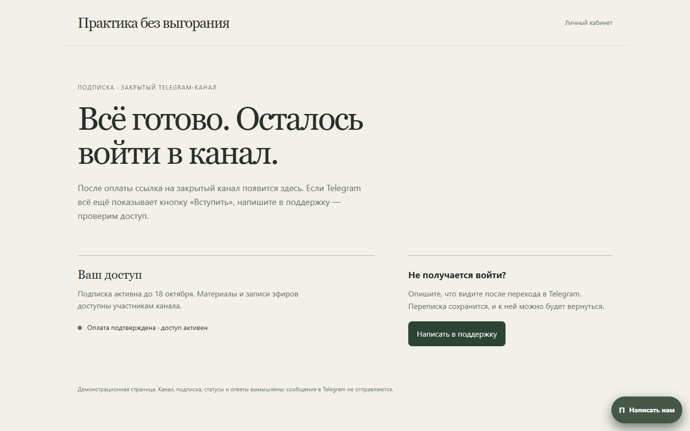

REAL UI / SANITIZED COPY · очередь обращений и действия оператора настоящие; имена, канал и вся переписка заменены вымышленным сценарием техподдержки.
REAL UI / SANITIZED COPY · очередь обращений и действия оператора настоящие; имена, канал и вся переписка заменены вымышленным сценарием техподдержки.Master walkthrough / две проверенные поверхности
Последовательно показаны локальный webchat replay, подлинный обезличенный Telegram-кадр и локальный RAG/AI draft replay. Это монтаж доказательств, не запись сквозной production-интеграции.
01 / Webchat → Telegram
Это тот же продукт, что и AI Support. Ниже — исходный webchat в локальной demo-среде. Обращение о доступе к закрытому каналу и ответ синтетические; сценарий согласован с обезличенным Telegram-экраном. Исторический контракт Web→Telegram подтверждён исходниками, сквозная production-запись пока отсутствует.

02 / TELEGRAM → RAG DRAFT → EDIT / REGEN / SEND
ORIGINAL: Telegram topics, operator drafts, D1/R2 и RAG-пайплайн. VERIFIED: 12 API-сценариев и UI на 390/768/1440. REAL EVIDENCE: переданный пользователем Telegram screenshot. DEMO / MOCK: клиент, канал и весь видимый текст переписки. DEMO: локальные retrieval/model adapters и вымышленные обращения; production-отправка отключена.